The person behind every loaf. Agronomist by degree — plant protection first, then management in the agro-industrial sector. For almost three years I owned BreadVenture, a sourdough bread and pastry bakery in Belgrade. The bakery carries on, just without me. Now I bake at home and share with you everything I know.
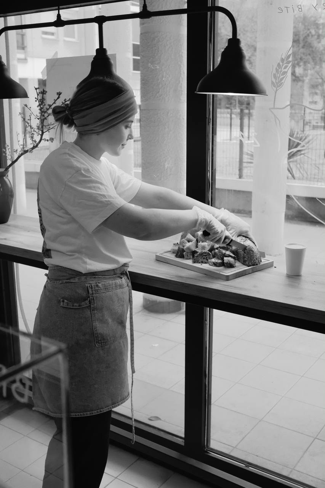
A tiny bakery, 30 m², where we baked sourdough bread and buns every single day. It was a beautiful time and a hard one: my first business, my first team, my first huge responsibility — and my first mistakes.
Our customers were incredible people: musicians, writers, athletes, entrepreneurs, teachers and many, many others. Thanks to them I believed in myself and in what we baked, learned Serbian, and picked up the way people here look at life. I stopped chasing success and started simply living. One of the best lessons I've had.
I love the bakery I built and the team I found. I hope everything goes well for them after me.
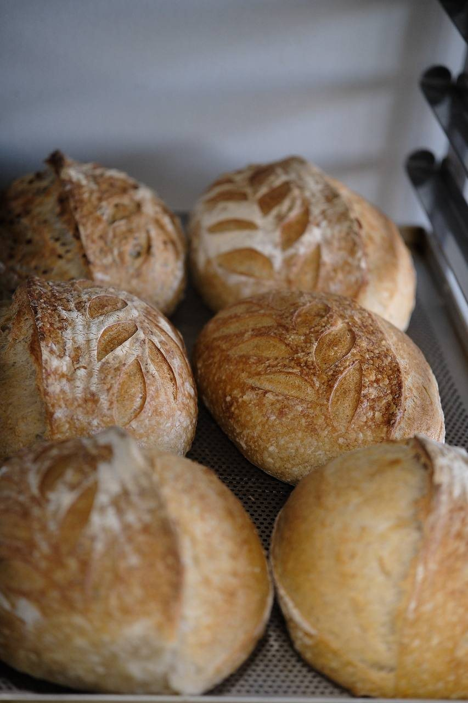
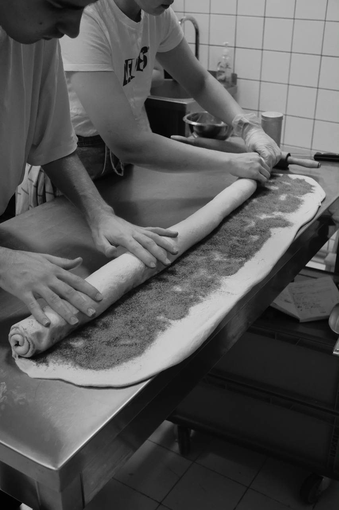
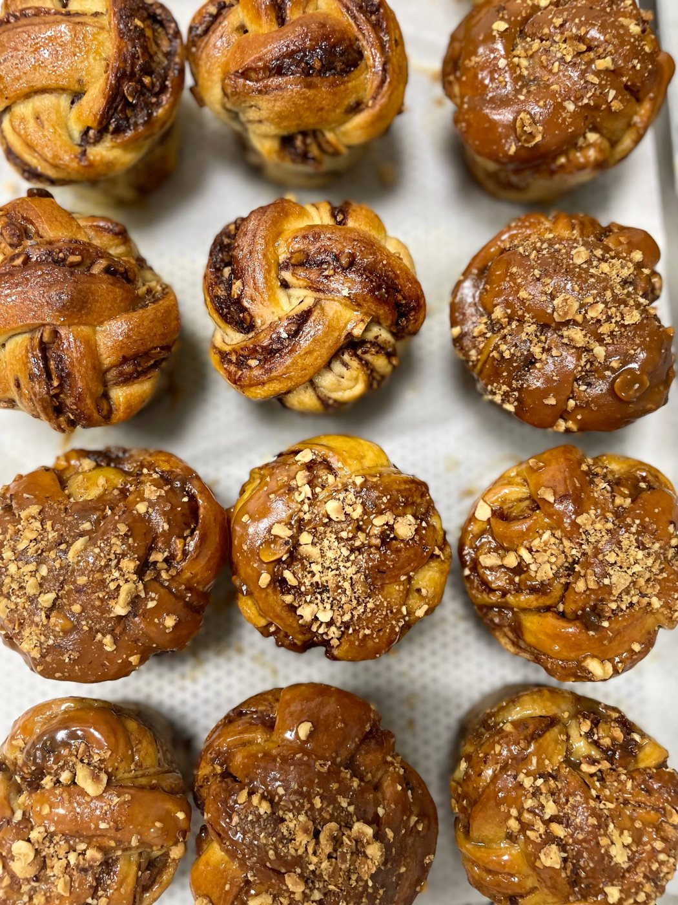
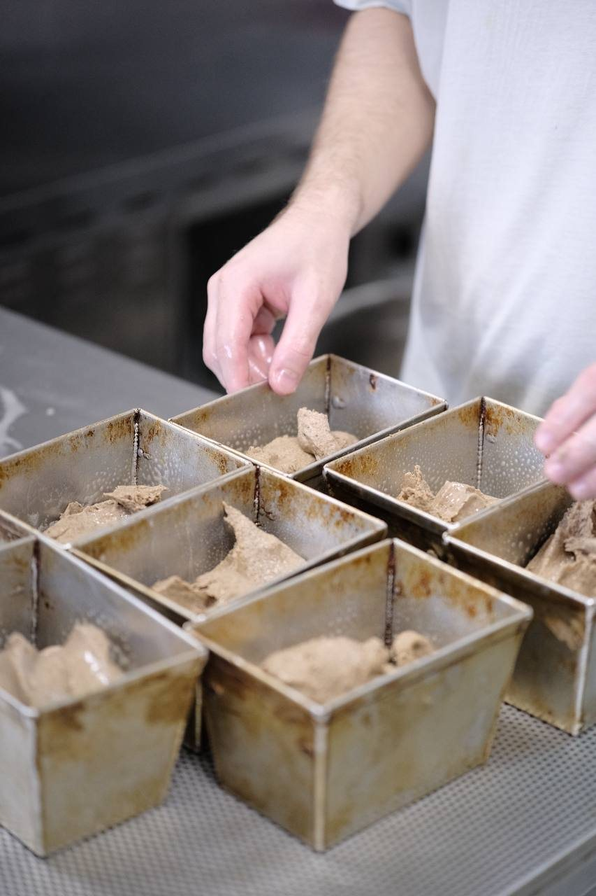
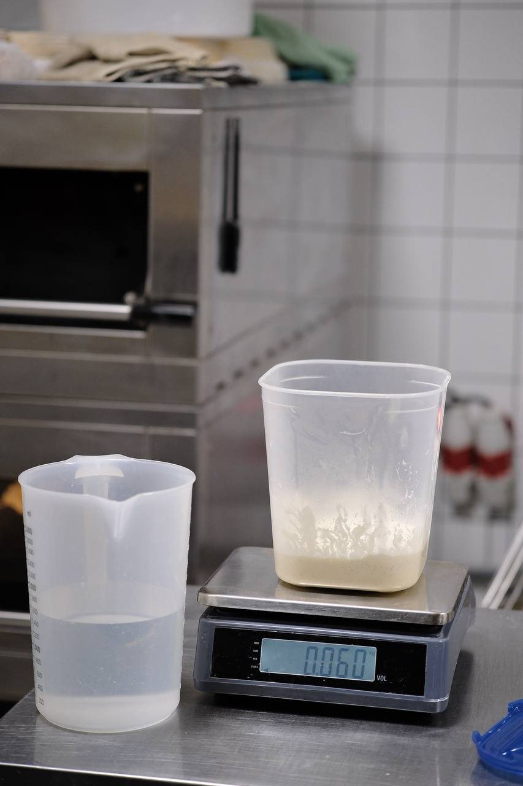
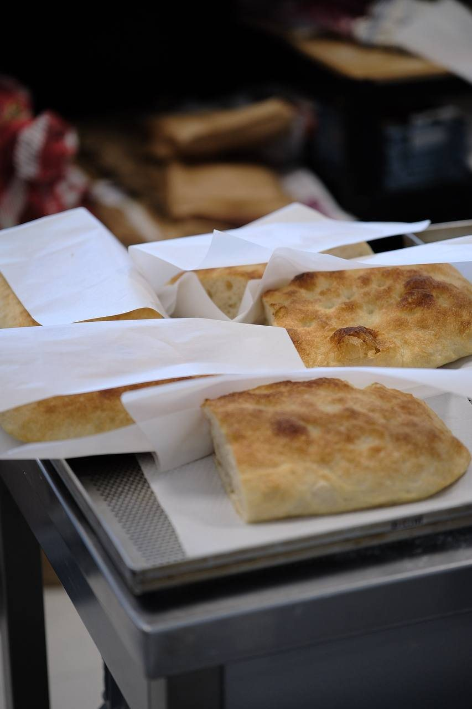
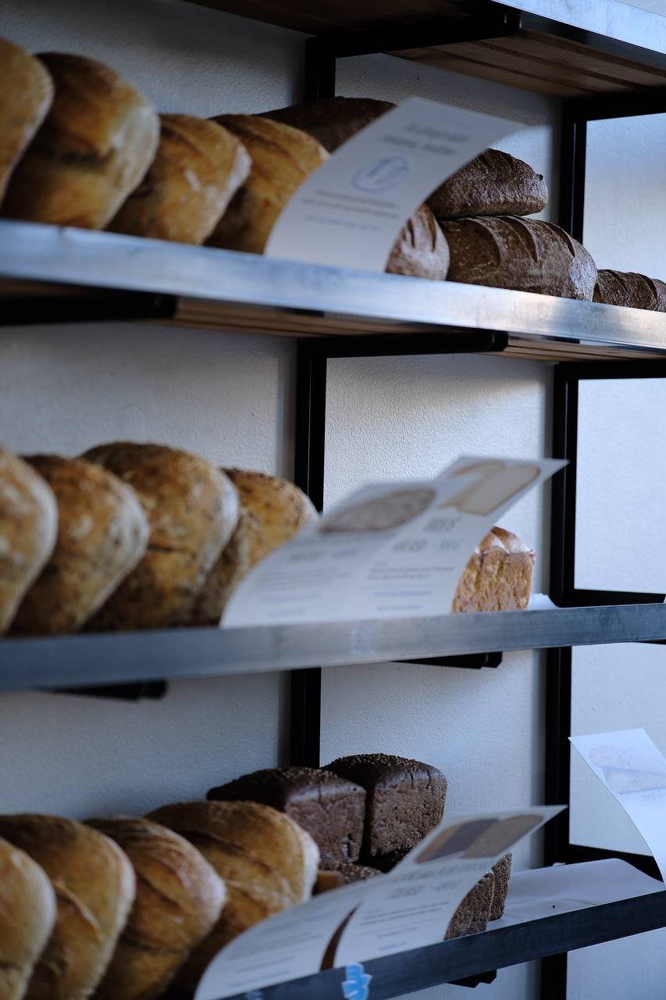
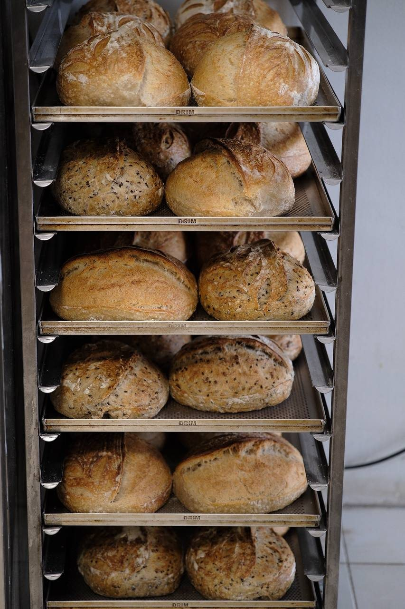
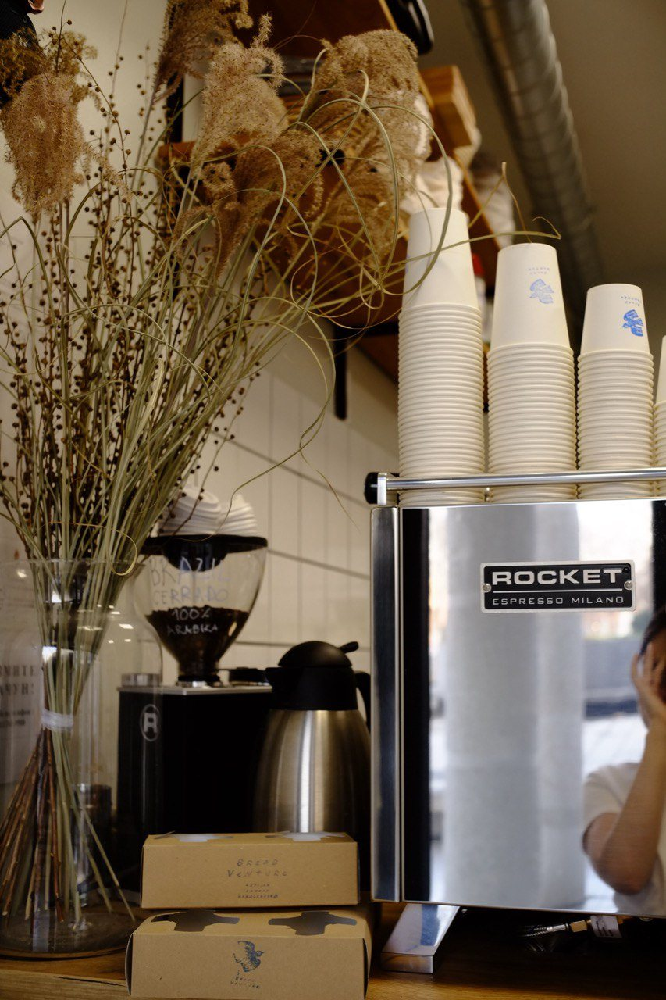
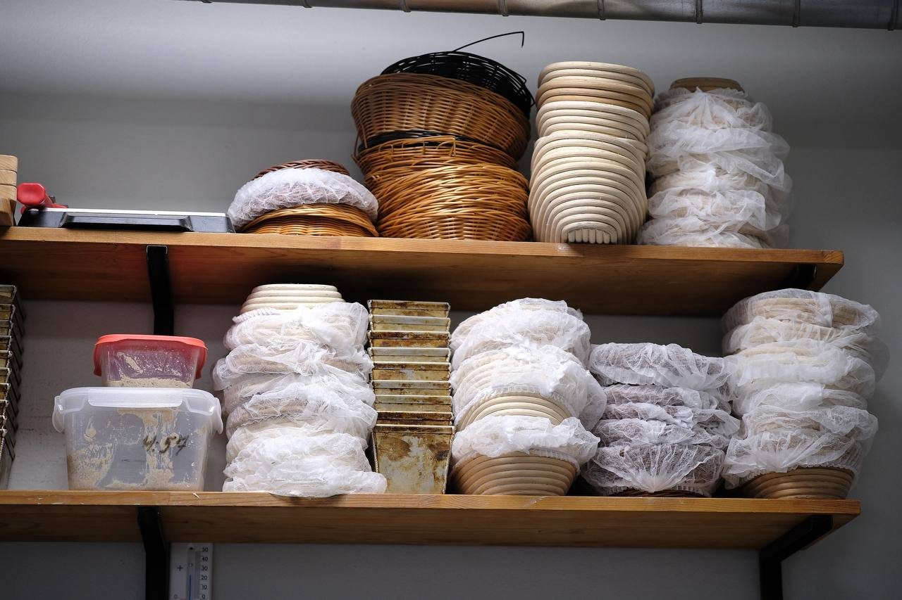
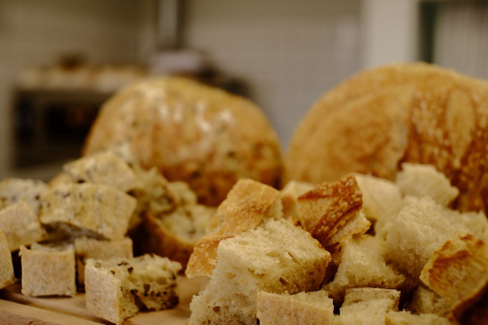
Structure + science + craft = a system that gives a predictably tasty result. That's the whole blog in one line. Every recipe here has grams, a temperature and a reason.
And no more fear of its "complexity". Spoiler: it's simpler than it sounds. Stay with me.